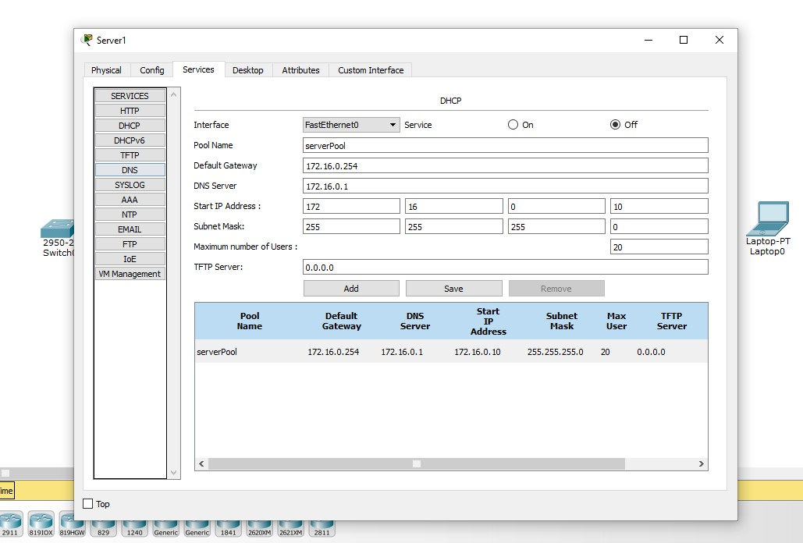

REDES
DNS
O DNS (Domain Name System) é um sistema que traduz nomes de domínio, como www.exemplo.com, para endereços IP (Internet Protocol) que os computadores utilizam para se identificar e se comunicar na internet.
Em outras palavras, o DNS funciona como uma espécie de "lista telefônica" da internet, onde os nomes de sites são convertidos em números, permitindo que os usuários acessem sites digitando nomes fáceis de lembrar, ao invés de números de IP difíceis de decorar.
DHCP

O DHCP (Dynamic Host Configuration Protocol) é um protocolo de rede utilizado para atribuir endereços IP automaticamente a dispositivos em uma rede. Isso facilita a administração de redes, pois elimina a necessidade de configurar manualmente os endereços IP em cada dispositivo. O DHCP permite que dispositivos, como computadores, smartphones e impressoras, obtenham um endereço IP válido e outras configurações de rede de forma automática, quando se conectam a uma rede.
- Descoberta (DHCP Discover): Quando um dispositivo (como um computador) se conecta à rede, ele envia uma mensagem de "descoberta" para localizar o servidor DHCP.
- Oferta (DHCP Offer): O servidor DHCP responde com uma oferta, que inclui um endereço IP disponível, a máscara de sub-rede e outras configurações necessárias, como o gateway padrão e os servidores DNS.
- Solicitação (DHCP Request): O dispositivo recebe a oferta e responde solicitando o uso do endereço IP oferecido.
- Acknowledge (DHCP Acknowledge): O servidor DHCP confirma a alocação do endereço IP, e o dispositivo pode começar a usá-lo para comunicação na rede.
Benefícios do DHCP:
- Facilidade de administração: Os administradores de rede não precisam configurar manualmente os endereços IP para cada dispositivo na rede.
- Evita conflitos de IP: O DHCP gerencia a distribuição dos endereços IP, evitando que dois dispositivos usem o mesmo endereço IP.
- Flexibilidade: Os dispositivos podem ser adicionados ou removidos da rede facilmente sem a necessidade de configuração manual.
O que é um servidor FTP?
"Um servidor FTP (File Transfer Protocol) é um computador ou serviço que permite o compartilhamento e a transferência de arquivos entre computadores em uma rede. Ele utiliza o protocolo FTP para essa finalidade."
Principais funcionalidades de um servidor FTP em uma rede:
-
Transferência de arquivos: Permite o upload, download e gerenciamento de arquivos entre o cliente FTP e o servidor.
-
Acesso remoto: Possibilidade que usuários acessem e manipulam arquivos armazenados no servidor FTP de qualquer local com acesso à rede.
-
Compartilhamento de arquivos: Permite que múltiplos usuários acessem e colaborem em arquivos armazenados no servidor FTP.
-
Armazenamento centralizado: O servidor FTP atua como um ponto central de armazenamento de arquivos, facilitando o backup e a organização dos dados.
Por que o FTP foi amplamente utilizado no passado?
"O FTP foi amplamente utilizado no passado devido a algumas vantagens, como: facilidade de uso, suporte a diversos sistemas operacionais e transferência de arquivos eficiente. No entanto, ele também apresentava limitações, como segurança limitada, complexidade de configuração e falta de recursos colaborativos."
Diferenças entre um servidor FTP e serviços de armazenamento em nuvem:
-
Acesso e localização: Os serviços de armazenamento em nuvem permitem acesso aos arquivos de qualquer dispositivo com conexão à internet, enquanto o servidor FTP exige conexão direta à rede local.
-
Recursos colaborativos: Os serviços de nuvem oferecem melhores recursos de colaboração, permitindo que múltiplos usuários acessem, editem e compartilhem arquivos em tempo real.
-
Segurança e criptografia: Os serviços de nuvem geralmente oferecem criptografia de dados e autenticação mais robusta, proporcionando maior segurança.
-
Escalabilidade: Os serviços de nuvem fornecem capacidade de armazenamento escalável, sem a necessidade de gerenciar a infraestrutura física.
-
Sincronização e backup: Os serviços de nuvem oferecem recursos de sincronização de arquivos entre dispositivos e backups automáticos, facilitando a gestão de dados.
Servidor de E-mail
O que é um servidor de e-mail e quais são suas principais funções em uma rede?
"Um servidor de e-mail é um computador ou serviço responsável por receber, armazenar e enviar mensagens de e-mail em uma rede. Suas principais funções incluem: recebimento de e-mails, envio de e-mails, armazenamento de e-mails, filtragem e organização, e autenticação e segurança."
O que é SMTP e como ele funciona?
"SMTP (Simple Mail Transfer Protocol) é o protocolo utilizado para o envio de e-mails entre servidores de e-mail. Ele funciona da seguinte maneira:"
-
"O remetente envia um e-mail utilizando um cliente de e-mail."
-
"O cliente de e-mail envia o e-mail para o servidor de e-mail do remetente, usando o protocolo SMTP."
-
"O servidor de e-mail do remetente recebe o e-mail e verifica o endereço de destino."
-
"O servidor de e-mail do remetente envia o e-mail para o servidor de e-mail do destinatário, novamente usando o protocolo SMTP."
-
"O servidor de e-mail do destinatário recebe o e-mail e o armazena na caixa de entrada do destinatário."
-
"O destinatário pode acessar o e-mail usando um cliente de e-mail ou um serviço de webmail."
O que são POP3 e IMAP e como eles funcionam?
POP3 (Post Office Protocol version 3):
-
"O POP3 permite que o cliente de e-mail baixe os e-mails do servidor de e-mail para o dispositivo local."
-
"Após o download, os e-mails são removidos do servidor, a menos que uma configuração específica seja definida para mantê-los no servidor."
-
"O POP3 é adequado para usuários que acessam seus e-mails de um único dispositivo, pois os e-mails ficam armazenados localmente."
IMAP (Internet Message Access Protocol):
-
"O IMAP permite que o cliente de e-mail acesse e gerencie e-mails diretamente do servidor de e-mail."
-
"Os e-mails ficam armazenados no servidor de e-mail, e o cliente de e-mail sincroniza com o servidor para exibir e gerenciar as mensagens."
-
"O IMAP é adequado para usuários que acessam seus e-mails de vários dispositivos, pois mantém a caixa de entrada sincronizada."
Portas utilizadas pelos protocolos SMTP, POP3 e IMAP:
-
"Porta 25: Utilizada pelo protocolo SMTP para o envio de e-mails."
-
"Porta 110: Utilizada pelo protocolo POP3 para a recuperação de e-mails."
-
"Porta 143: Utilizada pelo protocolo IMAP para a recuperação de e-mails."
"Essas portas são usadas pelos clientes de e-mail e servidores de e-mail para se comunicarem e transferirem mensagens de e-mail."
Conceito do Modelo OSI
O modelo OSI (Open Systems Interconnection) é um modelo de referência utilizado para entender como as redes de computadores funcionam, dividindo as suas funções em sete camadas distintas. Esse modelo foi desenvolvido pela ISO (International Organization for Standardization) na década de 1980 com o objetivo de padronizar e facilitar a comunicação entre diferentes sistemas de redes, independentemente de suas tecnologias e fabricantes.

Conceito do TCP/IP
O modelo TCP/IP (Transmission Control Protocol/Internet Protocol) é um conjunto de protocolos de comunicação utilizado na Internet e em redes privadas. Ele foi desenvolvido para garantir a comunicação eficiente e confiável entre dispositivos, independente do tipo de hardware ou sistema operacional utilizado. O modelo TCP/IP é baseado em uma arquitetura de camadas, semelhante ao modelo OSI, mas com menos camadas e de forma mais prática para as necessidades da Internet.